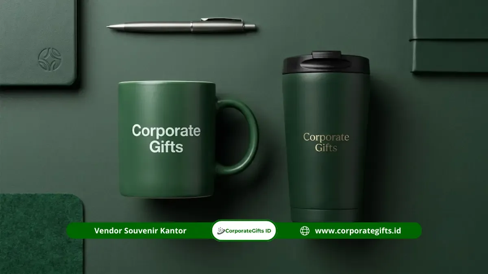

Corporate Gifts ID - Souvenir gathering fungsional adalah produk cinderamata korporat yang dirancang khusus dengan nilai kegunaan nyata untuk mendukung aktivitas harian karyawan, seperti mug keramik tebal, mouse nirkabel (wireless mouse), desk mat kulit sintetis, dan tumbler isolasi termal. Berbeda dengan cinderamata pajangan konvensional yang kerap berakhir berdebu di dalam laci, souvenir fungsional terus hadir di atas meja kerja sehingga paparan identitas visual perusahaan berlangsung aktif setiap hari kerja.
Pergeseran tren ini dipicu oleh kesadaran manajemen HR dan pimpinan perusahaan modern bahwa acara family gathering atau employee retreat bukan hanya ajang liburan sesaat, melainkan momen strategis untuk meningkatkan rasa memiliki (sense of belonging) dan loyalitas tim.
Poin Kunci Keunggulan Souvenir Gathering Fungsional:
- Maksimalisasi Brand Exposure: Logo perusahaan terpampang di meja kerja selama 8 jam sehari tanpa kesan promosi agresif.
- Mendukung Ergonomi & Produktivitas: Produk seperti mouse wireless dan desk mat langsung meningkatkan kenyamanan kerja digital.
- Apresiasi Bermakna Tinggi: Karyawan merasa diperhatikan kebutuhan praktisnya, bukan sekadar diberi barang formalitas.
- Tahan Lama & Bebas Limbah: Material bermutu tinggi menjamin masa pakai tahunan dan mengurangi barang sekali buang.
Pentingnya Nilai Guna dalam Souvenir Gathering
Memberikan souvenir kantor fungsional memberikan implikasi psikologis yang kuat pada budaya perusahaan. Ketika sebuah mug kopi berkualitas tinggi atau perangkat mouse ergonomis digunakan saat menyelesaikan tugas penting, karyawan secara bawah sadar menghubungkan kenyamanan tersebut dengan dukungan dari tempat mereka bekerja.
Selain itu, alih-alih menghamburkan dana untuk pernak-pernik murah yang cepat rusak, mengalokasikan anggaran pada merchandise gathering fungsional memastikan setiap rupiah anggaran menghasilkan manfaat berulang.
Pilihan Produk Fungsional Terpopuler di Meja Kerja
Berikut empat kategori cinderamata gathering yang paling banyak diminati oleh perusahaan teknologi, perbankan, hingga instansi BUMN untuk karyawan mereka:
1. Mug Keramik Tebal Lapisan Matte dengan Bantalan Gabus
Mug keramik berdinding tebal menjadi teman setia rutinitas seduh kopi atau teh pagi di ruang kantor. Dilengkapi bantalan gabus (cork base) di bagian bawah yang mencegah timbulnya bekas lingkaran air di meja kayu atau kaca.

Kombinasi desk mat kulit elegan dan mouse wireless menciptakan suasana meja kerja kantor yang tertata rapi dan modern.
2. Mouse Nirkabel (Wireless Mouse) Silent Click
Perangkat penunjang mobilitas laptop saat bekerja di kantor maupun WFH. Tombol senyap (silent click) memastikan tidak mengganggu rekan kerja di ruang terbuka, dengan daya tahan baterai hemat energi.
3. Desk Mat Kulit PU Waterproof
Alas meja kerja multifungsi berbahan kulit sintetis premium tahan percikan air. Memberikan ruang pergerakan mouse yang luas dan mulus sekaligus mempercantik visual ruang kerja.
4. Tumbler Vakum Stainless Steel Isolasi Suhu
Botol minum penunjang hidrasi sehat yang fleksibel dibawa berpindah antara meja kerja dan ruang rapat. Berbahan stainless SUS 304 tahan karat dengan retensi suhu panas/dingin hingga 12 jam.
Tabel Perbandingan Souvenir Gathering Meja Kerja
Berikut matriks perbandingan produk souvenir fungsional untuk memudahkan tim panitia gathering dalam menyusun paket cinderamata:
| Kategori Produk | Material & Fitur Utama | Manfaat Produktivitas | Teknik Branding Terbaik |
|---|---|---|---|
| Mug Keramik Cork Base | Keramik matte tebal + alas gabus anti-slip | Menjaga minuman hangat tanpa merusak permukaan meja | Sablon decal oven tahan panas |
| Wireless Mouse Silent | ABS matte, koneksi 2.4GHz USB & Bluetooth | Meningkatkan kecepatan navigasi digital tanpa bising | Digital UV Print full color |
| Desk Mat PU Leather | Kulit sintetis waterproof dua sisi (dual color) | Alas mouse luas, melindungi meja, tampilan estetik | Deboss cetak tenggelam elegan |
| Tumbler Vakum SUS 304 | Baja tahan karat double wall vakum 12 jam | Menjamin hidrasi sehat di meja kerja dan meeting | Laser fiber engraving presisi |
Tips Kurasi dan Strategi Branding Cinderamata Karyawan
Untuk memastikan bingkisan gathering memberikan impresi mendalam, perhatikan strategi implementasi berikut:
- Kemasan Box Bundling yang Harmonis: Padukan dua atau tiga item fungsional ke dalam satu kemasan hardbox bertema senada untuk menciptakan pengalaman unboxing yang berkesan.
- Penempatan Logo Proporsional: Hindari branding berlebih. Logo perusahaan yang ditempatkan secara minimalis dan rapi justru membuat karyawan lebih bangga memakainya di luar kantor.
- Personalisasi Nama Tim: Menambahkan ukiran nama individu karyawan di samping logo institusi akan melipatgandakan nilai apresiasi personal.
Kesimpulan dan Solusi Pengadaan
Souvenir gathering fungsional adalah wujud nyata kepedulian perusahaan terhadap kesejahteraan dan produktivitas karyawan yang terus memberikan timbal balik positif bagi citra brand.
Konsultasikan kebutuhan cinderamata gathering kantor Anda bersama spesialis CorporateGifts.ID. Dapatkan penawaran harga grosir terbaik dan simulasi mockup digital gratis melalui formulir permintaan penawaran harga hari ini juga.